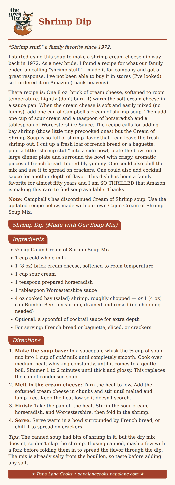

WELCOME
"Shrimp stuff," a family favorite since 1972.
I started using this soup to make a shrimp cream cheese dip way back in 1972. As a new bride, I found a recipe for what our family ended up calling "shrimp stuff." I made it for company and got a great response. I've not been able to buy it in stores (I've looked) so I ordered it on Amazon (thank heavens).
There recipe is: One 8 oz. brick of cream cheese, softened to room temperature. Lightly (don't burn it) warm the soft cream cheese in a sauce pan. When the cream cheese is soft and easily mixed (no lumps), add one can of Campbell's cream of shrimp soup. Then add one cup of sour cream and a teaspoon of horseradish and a tablespoon of Worcestershire Sauce. The recipe calls for adding bay shrimp (those little tiny precooked ones) but the Cream of Shrimp Soup is so full of shrimp flavor that I can leave the fresh shrimp out. I cut up a fresh loaf of french bread or a baguette, pour a little "shrimp stuff" into a side bowl, plate the bowl on a large dinner plate and surround the bowl with crispy, aromatic pieces of french bread. Incredibly yummy. One could also chill the mix and use it to spread on crackers. One could also add cocktail sauce for another depth of flavor. This dish has been a family favorite for almost fifty years and I am SO THRILLED that Amazon is making this rare to find soup available. Thanks!
Note: Campbell's has discontinued Cream of Shrimp soup. Use the updated recipe below, made with our own Cajun Cream of Shrimp Soup Mix.
Tips: The canned soup had bits of shrimp in it, but the dry mix doesn't, so don't skip the shrimp. If using canned, mash a few with a fork before folding them in to spread the flavor through the dip. The mix is already salty from the bouillon, so taste before adding any salt.

WELCOME
The original recipe is a scanned review — open/download the original PDF.